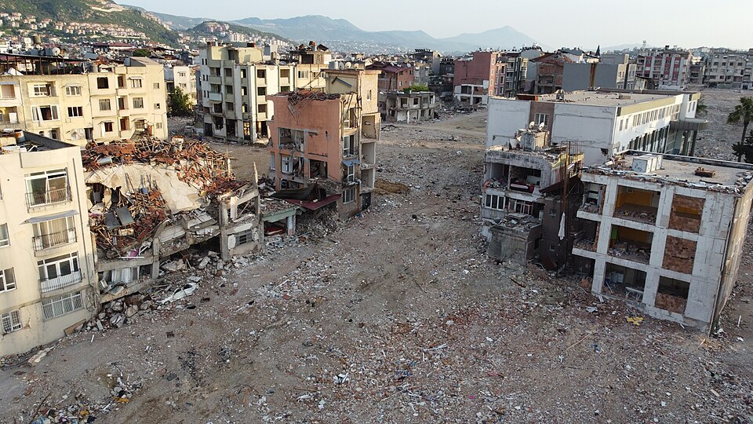
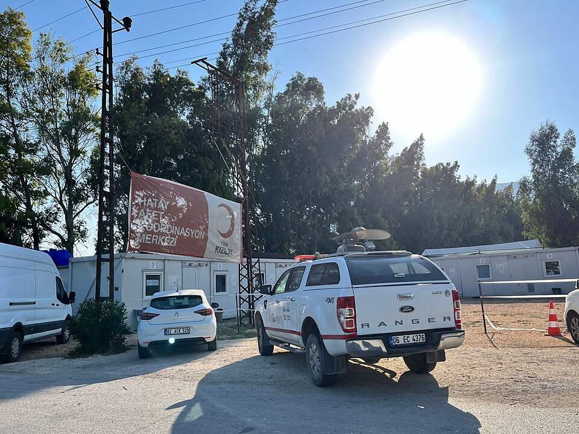

担架接力
2月8日傍晚，土耳其救援人员在一栋倒塌的八层楼里发现一名孕妇，随即联络中国救援队。考虑到被困者的身体状况，两国队员反复商量施救方案。
- 土耳其南部靠近叙利亚边境发生强震，哈塔伊省多处建筑倒塌。
- 中国救援队抵达哈塔伊，与当地应急管理部门协调员对接，选定搜救区域。
- 当地队伍发现被困孕妇，中土双方评估现场、共同定方案，中方提供技术装备支持。
- 队员们把她抬上担架，从瓦砾间一段一段接力运出，送上救护车。


这名孕妇是中国救援队此行参与营救的首位幸存者。把她送上救护车后，队员继续搜救。
人道主义与生命至上
当地队伍先找到被困者，中方提供技术装备，双方一起制定方案。设备怎么用、担架怎么抬，都要围绕孕妇的身体状况来决定。
